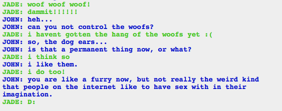

Well…guess I should be glad about having that confirmed so quickly.
And I will admit, the typos do open a great opportunity for wordplay like horrible=whore bible and overlard=overlord.
Well…guess I should be glad about having that confirmed so quickly.
And I will admit, the typos do open a great opportunity for wordplay like horrible=whore bible and overlard=overlord.
I’m not sure whose interpretation I like better!
Oh man!
I’d wondered about their screen names at first, but so much time passed since their introduction I totally forgot about it. That's awesome.


So after the whole Green Sun thing, which is still blowing my mind, I went back to look at what Doc Scratch said, and I have some thoughts:
Like, his claims that he didn’t lie are incredibly suspect. The Tumor might have enough power to destroy the Green Sun, but it wouldn’t have, and couldn’t have, making that statement just a hair shy of a lie. His earlier comments about destroying the Green Sun are even worse. Basically, he lays it out as “attempt to destroy the sun -> his death and Jack’s neutralization.” Now, “attempt” does mean that–
Actually I just figured it out. They attempted to destroy the sun, and that lead to Doc’s death (I guess? it looked like meta!Hussie killed him), and it (more or less) lead to Jade reaching god-tier and fusing with the first guardian, which I figure means she can take out Jack, right?
However! He is a creepy bastard who seriously gaslight Vriska when she was what…10ish? Sure, she was “going to” do that shit anyway, but she’s also had someone whispering in her ear that she should kill people, that she will kill people, that she’s that type of person. No wonder she acted like she’d been abused.
Also I just got that Terezi would call him Mr. Vanilla Milkshake because she would start seeing via scent.

WHAT THE SHIT IS THAT A LUSUS?!
Why is there a lusus on Earth???

Some asshole linked me to humanimals, and now this picture is even more horrifying than usual. Fucking Hussie.
If by some luck you haven’t see humanimals, don’t look it up. It’s just horrifying shit.


Oh man. That’s a bit creepy.
What is with the Striders and talking to themselves? First we’ve got Dave and Davesprite, now we’ve got, uh, TT and the auto responder.

Boo! That is so long! I do not want to deal with the new kids for three years…

Me too, John. Me too.
So I guess it being a prank justified Doc Scratch’s almost outright lies. Since he did say that jokes were allowed. This one just had a serious punchline. Regardless, fuck that guy.

It’s the hand (paw?) of the genesis frog! It’s a universe itself, so what’s it floating around in? Hm! I mean, space is contained in the universe, so is this like…ur space?

Jesus christ wtf. I’m not even sure what I’m looking at…
BUT! That’s the little platform on the bottom that the trolls were standing on when they were about to go claim their prize, right? Jack is there now!


Sollux noooooo
And now everybody knows what color Karkat’s blood is. Well, everybody being Gamzee, Kanaya, and Terezi.
There’s something so sweet about how Gamzee is holding Karkat in that second picture. And something hilarious about Kanaya’s face in the background.

OH MY GOD OH MY GOD OH MY GOD.
Dave and Rose look ridiculous in their god outfits. I guess they had to counteract how awesome Jade and John look.
SOLLUX LIVES!

*snicker*

God damnit John, we were all trying to avoid thinking about that.
Alright, having to use something to transport the poster message through Jade to the trolls (+Rose and Dave) is a super contrived way to work a bucket joke into the situation. I appreciate the attempt, but posters get rolled up and sent places all by their lonesome all the time.

Well…That sounds a lot like Lord English.

Whimsical piece of shit!
This would be the cutest mutualistic moiraillegiance if it weren’t for all the murder.

Ahahahahaha
I laughed so hard at “And then fifty more.”

Everyone is hitting on each other and it is perfect and makes me so happy.


Nope, I take it back, that contrived set up was DEFINITELY worth the joke.
Poor Karkat, the guy is going to give himself a heart attack with all this stress.

Tomorrow I have an exam on Newton’s laws, so I enjoyed the shit out of coming across this joke.

This picture is too fucking cool not to post.


WHAT THE FUCK. How is her dreamself dead already? We just met her!
You have to give this session’s Jack credit, he does not waste time.


Dude that is awesome. Is that like a special Jane power, doing something when her dreamself dies? I’m guessing it is, since Jade’s dreamself just died and stayed dead. Poor thing.


This universe’s first guardian is a kitty cat! Eeeeeee!
Just when I thought this comic couldn’t get any better, an omnipotent cat shows up. Hiiii kitty!


Yep, that sounds exactly like what would happen if a kitty was all-powerful. That and all of the cans would be open, forever.
GCat makes it sound like Google made it. Which makes sense, if nyone is going to make an omnipotent cat, it would be Google. One of their employees is probably doing just that as a side project right now.

Oh my god Ro-person! For fuck’s sake. Something terrible had better be going on with you to leave without any explanation like that. If it is a stupid reason I’m gonna be so pissed.
…Can you tell I don’t much like these new kids? :(

Oooooh fuck I remember the ~Ath thing. Sort of. I remember it is not a good thing! Nope, not at all!
Okay I looked it up and it’s the terrible coding language that Karkat wanted to learn, and the curse program thing that Sollux sent him used ~ATH…Actually I shall kick my findings to a second post.


Soooo Jane’s copy of Sburb has a ~ATH file type. Which looking at this is kind of terrible. Karkat ran that virus and believed it to be the curse that basically fucked over all of the trolls and their entire session. Everything about coding goes over my head, but now I know that there are two universes, and one is red and the other is blue, and they have both recently died. Jane is about to execute a ~ATH file, and her computer explodes, sooooooo.
Also that virus Sollux had is the one that summons Lord English! Holy shit. The subprogram is Lord English. It makes so much sense. He shows up at the end of the universe, but he’s been there all the time, just waiting to be executed. And he’s a virus, since he’s been living inside Doc Scratch, while Doc Scratch plays the good host.
Ooooh such fun!


Soooo…that’s bad.
Shoulda listened to your friend, Jane. Now bad things will happen. You even told her that you were going to start believing what she said…guess that doesn’t apply when you’re feeling impatient.

TEAM GOD CAT!!!! Who’s with me?!

What the fuck Ro? Oh my god. Y'know, I take it back, none of that was Jane’s fault. It’s all on Ro for making a goddamned exploding virus. Ro, look at your life, look at your choices!

I think we should all take a moment to imagine this. As I imagined it.
Which involves Strider and English playing Pattycake. Because that’s basically what high-fiving constantly would be.
tbh I am getting really bored of having Jack Noir as the antagonist. Okay, Bec!Jack is kind of awesome, and he’s more interesting since he has the whole loyalty to Jade thing going on. But at this point I just want to meet a new villain. I think that’s why I wanted destroy Skaia/the game to be a thing, even if now we know that’s not possible. I figure Lord English will be the villain eventually, but Jack showing up again is just kind of meh.


Now we meet Dirk Strider!
From the chat logs he’s about the only one I like. He uses lovely grammar and punctuation, he’s a nice guy, he isn’t crass, and he’s pretty straightforward, which is a nice change of pace.
But he likes puppets. Why can’t we be free of the fucking puppets? Also he appears to be some kind of furry.
Anyway, he’s cool like Dave, but less insecure about it. Which makes sense, because, y'know, Dave was raised by bro/Dirk, and that had to screw with him something terrible. I mean, the guy appears to have a sexual attraction to humanized animals and fuzzy toys, so of course Dave is going to be constantly insisting that the puppet thing is totally ironic.


Jane Crocker!
We’ve known about her for a while. I like her, now that I’ve eaten something and I’m not so irritable. I love that she has a Ron Swanson poster, and one of Dr. Manhattan with a picture over his blue junk.
She’s a big sweetie pie, and ever so silly. I just wish we could see her out from under the influence of the Batterwitch.
Also she’s not a very good prankster.


Aaaaaand finally Jake English.
By far the most intriguing, from his connections to Lord English. I’m really dying to know how they’re connected and I keep trying to read into what he does, but everything seems incredibly benign. He’s not showing any signs of evil or whatever. He’s just a sweet kid who wants to have adventures. I imagine that’s going to turn out horribly for him.


And Roxy Lalonde. I’m not a big fan of her right now. I’m sure she’ll grow on me eventually, but right now I find her ridiculously annoying.
I really don’t like the fact that she drinks so much, but maybe that’s just me. After Rose made a crack about her mom getting drunk and passing out after a funeral, the whole always drinking thing just isn’t funny to me. She’s also a bit whiny for my taste.
Mostly I think I’m being hard on the new kids because I’m annoyed that the story has been interrupted. I don’t want to get to know Roxy, I want to see what’s going on with Rose!
I am incredibly suspicious! They’re a troll, but they’re just so nice and normal seeming, and that can’t be right. I mean, there are certainly good trolls, but it was always underneath prickliness or just weirdness, and–if I am getting the timeline yet–it came out after they interacted a bit with the people. Having a troll that’s just polite and proper all the time…
I’m suspicious that they’re the Batterwitch/Condesce or related to her in some way, but of course if it’s the 13th zodiac, Ophiacus, as the symbol we saw implies that wouldn’t place it with pisces and aquarius, which is where the Condesce ought to be.
The symbol is also the one for Hermes, the Cadeceus, which is used as a medical symbol, which would be really interesting except that one seems to almost always have wings. HOWEVER Hermes is also associated with thieves, liars, and gamblers. (I could be wrong and it could be the Rod of Asclepius but that one has only one snake, so the Cadeceus is a lot more likely).
One last note before I talk about the actual character, their name uraniunUmbra basically means the shadow that Uranus would cast, specifically the darkest part. Whether that refers to the planet, the planet’s significance in astrology, or the titan of Greek mythology isn’t clear.
But enough symbolism and mythology! They use grey text, which associates them with the Sufferer and Karkat. But I have a sneaking suspicion that it’s dissembling, rather than kinship. Revealing their place on the hemospectrum could give us a lot more information. I’m guessing that they’re not related to our trolls, since they imply that they’re in a different session from the four we know–but again, that could be intentional misdirection.
Now that I’m rereading their conversation with Jane, I’m wondering if they couldn’t be the Sufferer/Karkat’s ancestor in the troll’s first session, which was ultimately scratched. They’ve set it up so they’re beginning their session the same day Jane et al. are, but the personality super does not make sense. Also I get a distinctly feminine vibe, but that could just be from the formal speech.
So that’s a lot of text to say…I don’t know? I like them but I am assuming they will turn out to be totally evil. Or at least an antagonist of some sort.
I’m assuming this is another case of Hussie offering theories rather than answers? The English language can be fuzzy.
The latter seems more likely. It could be related, but the stuff Gamzee did was only tangentially related to honking–that is, the clown doll and Cal.
However, after seeing Cal move around a lot under the influence of black flashes now in at least two places (I remember on the meteor, and now with Dirk, could have happened before that too), and the fact that call was Doc Scratch’s ectobiological father, it could be because of Cal.
It could also be both, due to the whole cause-effect loops that go on everywhere. Chicken or the egg thing.

Huh, this comic sure has a lot to say about what makes a person a leader. I would make more commentary on that, but I’m sure there’s a lot of meta. I think it’s sweet, though, how each group interacts with their leader, be it Karkat, John, or Jane. There’s a real tenderness in their affection and I love it.

Could the horrorterrors be giving Roxy dreams about Rose? My issue with her drinking aside, I really want to see more Roxy/Rose interactions, especially since Roxy seems to want to be a good mom in this conversation! When she died I was disappointed that we might never see more of their relationship.

Dirk has it right, though. Boy and a girl, freaks, raised by people who made…lets not say bad parents, lets say odd parents.

Wait, is Dirk confirming that he’s gay in the chillest way possible? I mean, of course, he would do it that way, because he’s Dirk.
I look forward to him flirting it up with a troll and annoying the shit out of Karkat. Not because he’s gay (maybe? I can’t be sure with that guy) but because Karkat hates the troll-on-human loving and gender plays no part in it.
Really I just love Karkat getting mad about silly stuff.

Good god, Dirk, organize your fucking files! My mom’s desktop looks nicer than that.
So now that I’ve got everyone’s titles, I wonder what it means that the humans don’t have heroes for blood, doom, rage, or mind. There’s four more trolls than humans, so it makes sense that the trolls would have more domains, but since apparently nothing in this thing is accidental, it must have some greater meaning.

1. Dirk must be enjoying that banter, because I am ready to pitch the auto responder glasses into the nearest cup of water.
2. Considering the vaguely romantic bent of this conversation, “beyond the pail” is hilarious.

I seem to remember ~someone~ pirouetting off a handle!
Apparently Hussie said that Tavros was on the floor because his horns were too big for the table…
Q: “Speaking of Tavros, did Gamzee set his head on the floor as an insult?”
A: Mainly his horns were too big to fit on the jury table.
It’s kind of like when you’re shopping, and you have to buy a huge thing like a giant bag of kitty litter or whatever, so you have to slide it in the space under the cart.
Basically what I’m saying is, if Gamzee carried all the dead troll heads in a shopping cart, he would put Tavros’ head in the bottom thing.